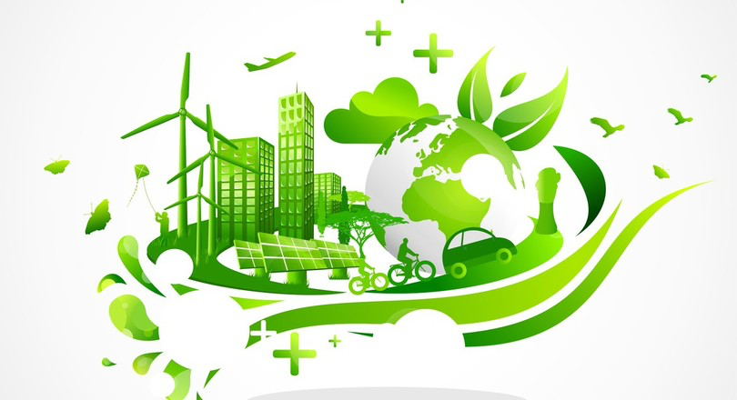

Vanaf 1972 is het duidelijk dat deze manier van produceren niet goed is voor het milieu.
Sinds een aantal jaar worden er steeds meer duurzame manieren bedacht en aangeboden aan bedrijven,
scholen en huishoudens. Denk hierbij aan zonnepanelen, warmtebronnen en betere isolatie. Schaft een
bedrijf dit aan, noem je dit een duurzame investering.
Echter is dit wel een geldinvestering die je moet maken, dit verdien je wel terug maar niet binnen één jaar.
De overheid stimuleert deze investeringen wel en geeft subsidie aan de bedrijven, scholen of huishoudens die deze
duurzame investering willen maken. Door de subsidie wordt de investering iets goedkoper, doordat je geld ontvangt
van de subsidie. Hierdoor kunnen bedrijven, scholen en huishoudens misschien ieder de keuze maken om de duurzame
investering te doen.

Bedrijfskolom
Alle bedrijven die na elkaar aan een product meewerken, vormen samen de bedrijfskolom. Aan het begin ervan staat
een bedrijf dat grondstoffen uit de natuur haalt. Aan het einde staat een detaillist. Die verkoopt het product
aan de consument. Elk bedrijf in de bedrijfskolom maakt het product steeds meer geschikt voor consumptie.
Zo heeft elk bedrijf toegevoegde waarde aan het product.
Keurmerk
Als je een lunch eet met een broodje en een flesje water maak je dit op.
Je hebt deze goederen verbruikt, daarom noem je deze goederen verbruiksgoederen.
Een fiets of een laptop gaan een langere tijd mee en je gebruikt ze vaker. Dit noem je gebruiksgoederen.
Producten krijgen soms een keurmerk dat je kunt herkennen aan een logo. Het keurmerk laat
zien dat het product aan bepaalde eisen voldoet. Er zijn bijvoorbeeld keurmerken voor dierenwelzijn, milieu,
elektronica en webwinkels. Soms verzinnen fabrikanten zelf een keurmerk. Zo’n keurmerk is minder betrouwbaar
omdat er geen onpartijdige controle op is.